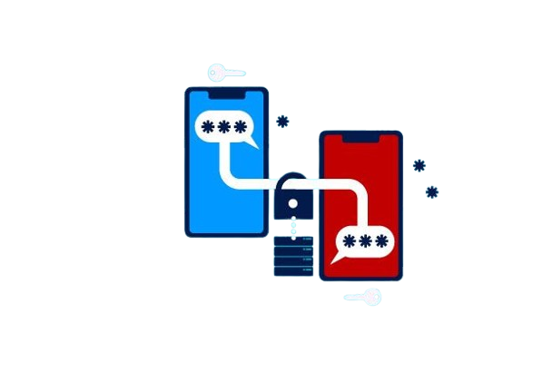
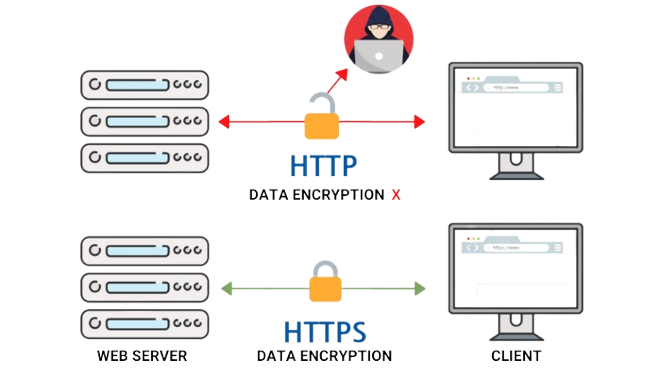
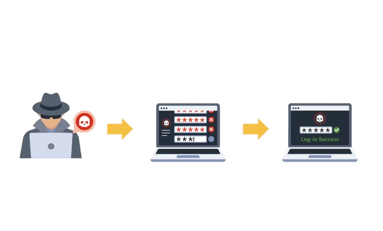

Bedreigingen
Brute force
Veel websites beperken het aantal keer dat je een wachtwoord kunt proberen om brute force aanvallen te voorkomen. Dit is echter niet genoeg, want zwakheden in de systeembouw kunnen aanvallers nog steeds duizenden pogingen laten doen. Het is cruciaal om een moeilijk wachtwoord te maken. Veel websites vragen om cijfers en speciale tekens, wat het aantal mogelijke wachtwoorden vergroot en het voor aanvallers moeilijker maakt. Langere en complexere wachtwoorden zijn veiliger. Vermijd voor de hand liggende woorden zoals woorden uit een woordenboek, de naam van de website, je eigen naam of geboortedatum. Gebruik voor elke website een ander wachtwoord en verander ze minimaal één keer per jaar. Sommige diensten hebben geheime vragen om toegang te krijgen als je je wachtwoord vergeten bent. Het is beter om deze optie niet te gebruiken, omdat criminelen deze antwoorden vaak makkelijk kunnen vinden via sociale media.
Password Manager
Voor elke website een ander wachtwoord van minimaal 12 tekens onthouden is moeilijk. Gebruik een password manager om al je wachtwoorden veilig op te slaan. Je onthoudt slechts één moeilijk wachtwoord. De password manager kan op je smartphone en in je browser worden geïnstalleerd. Bij inloggen vult deze automatisch je gegevens in. Bij het aanmaken van een nieuw account kan je een sterk wachtwoord laten kiezen. Je kunt ook iemand die je vertrouwt toegang geven tot je password manager.
  